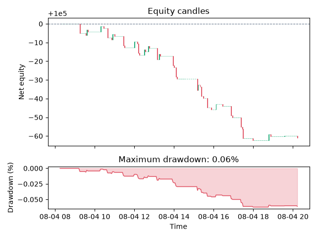

Note
Go to the end to download the full example code.
Build a Complete Strategy#
This end-to-end tutorial follows the complete TradeTide workflow: load and validate data, calculate an indicator, turn its signals into orders, simulate a portfolio, inspect the trade ledger, and plot net equity and drawdown. It uses bundled EUR/USD data and is intended as a reproducible research example, not investment advice.
Imports and diagnostics#
Logging is opt-in. DEBUG logs explain order fills, validation results, costs,
and calculated metrics. Use enable_debug_logging() instead when native
position and portfolio diagnostics are also required.
import logging
from TradeTide import (
Currency,
Market,
Order,
OrderBook,
OrderSide,
OrderType,
Portfolio,
PositionCollection,
Strategy,
configure_logging,
validate_market_data,
)
from TradeTide import capital_management, exit_strategy
from TradeTide.execution import ExecutionCosts
from TradeTide import BollingerBands
from TradeTide.performance import BacktestResult
from TradeTide.times import hours
configure_logging(logging.DEBUG)
<Logger TradeTide (DEBUG)>
Load and validate data#
market = Market()
market.load_from_database(Currency.EUR, Currency.USD, time_span=12 * hours)
quality = validate_market_data(market, max_spread_ratio=0.02)
quality.raise_for_errors()
print(f"Loaded {len(market.dates)} EUR/USD candles; warnings: {len(quality.warnings)}")
18:29:34 DEBUG TradeTide: Market validation: observations=721 errors=0 warnings=0
Loaded 721 EUR/USD candles; warnings: 0
Build an indicator and derive trade signals#
strategy = Strategy()
strategy.add_indicator(BollingerBands(window=30, multiplier=2.0))
raw_signals = strategy.get_trade_signal(market)
Translate signals into executable market orders#
The order book is also useful when a strategy instead creates limit, stop, or stop-limit orders. Its fills form the exact signal stream supplied to native position management.
orders = [
Order(
order_id=f"signal-{index}",
side=OrderSide.BUY if signal == 1 else OrderSide.SELL,
order_type=OrderType.MARKET,
submitted_at=market.dates[index],
)
for index, signal in enumerate(raw_signals)
if signal in (-1, 1)
]
order_book = OrderBook(orders)
entry_signals = order_book.trade_signals(market)
print(f"Signals: {len(orders)}; fills: {len(order_book.fills)}")
Signals: 31; fills: 31
Simulate positions and a portfolio#
positions = PositionCollection(market, entry_signals)
positions.open_positions(exit_strategy.Static(stop_loss=4, take_profit=4))
positions.propagate_positions()
portfolio = Portfolio(positions)
portfolio.simulate(
capital_management.FixedLot(
capital=100_000,
fixed_lot_size=10_000,
max_capital_at_risk=10_000,
max_concurrent_positions=1,
)
)
Inspect the ledger and risk-adjusted metrics#
result = BacktestResult.from_portfolio(
portfolio,
ExecutionCosts(commission_per_lot=0.0001, slippage_pips=0.05),
)
print(result.metrics.to_dict())
print(result.ledger.to_dataframe().head())
18:29:34 DEBUG TradeTide: Trade short 2023-08-04 09:15:00→2023-08-04 09:33:00 gross=4.0000 costs=2.1000 net=1.9000 (take_profit)
18:29:34 DEBUG TradeTide: Trade long 2023-08-04 09:36:00→2023-08-04 09:39:00 gross=4.0000 costs=2.1000 net=1.9000 (take_profit)
18:29:34 DEBUG TradeTide: Trade long 2023-08-04 10:16:00→2023-08-04 10:27:00 gross=4.0000 costs=2.1000 net=1.9000 (take_profit)
18:29:34 DEBUG TradeTide: Trade short 2023-08-04 10:38:00→2023-08-04 10:51:00 gross=4.0000 costs=2.1000 net=1.9000 (take_profit)
18:29:34 DEBUG TradeTide: Trade long 2023-08-04 10:54:00→2023-08-04 11:00:00 gross=4.0000 costs=2.1000 net=1.9000 (take_profit)
18:29:34 DEBUG TradeTide: Trade short 2023-08-04 11:27:00→2023-08-04 11:30:00 gross=4.0000 costs=2.1000 net=1.9000 (take_profit)
18:29:34 DEBUG TradeTide: Trade long 2023-08-04 11:58:00→2023-08-04 12:07:00 gross=4.0000 costs=2.1000 net=1.9000 (take_profit)
18:29:34 DEBUG TradeTide: Trade short 2023-08-04 12:10:00→2023-08-04 12:13:00 gross=4.0000 costs=2.1000 net=1.9000 (take_profit)
18:29:34 DEBUG TradeTide: Trade short 2023-08-04 12:30:00→2023-08-04 12:31:00 gross=-4.0000 costs=2.1000 net=-6.1000 (stop_loss)
18:29:34 DEBUG TradeTide: Trade short 2023-08-04 12:41:00→2023-08-04 12:44:00 gross=-4.0000 costs=2.1000 net=-6.1000 (stop_loss)
18:29:34 DEBUG TradeTide: Trade short 2023-08-04 13:07:00→2023-08-04 13:09:00 gross=4.0000 costs=2.1000 net=1.9000 (take_profit)
18:29:34 DEBUG TradeTide: Trade short 2023-08-04 13:13:00→2023-08-04 13:16:00 gross=-4.0000 costs=2.1000 net=-6.1000 (stop_loss)
18:29:34 DEBUG TradeTide: Trade long 2023-08-04 13:56:00→2023-08-04 13:58:00 gross=-4.0000 costs=2.1000 net=-6.1000 (stop_loss)
18:29:34 DEBUG TradeTide: Trade long 2023-08-04 14:04:00→2023-08-04 14:08:00 gross=-4.0000 costs=2.1000 net=-6.1000 (stop_loss)
18:29:34 DEBUG TradeTide: Trade short 2023-08-04 15:10:00→2023-08-04 15:11:00 gross=4.0000 costs=2.1000 net=1.9000 (take_profit)
18:29:34 DEBUG TradeTide: Trade short 2023-08-04 15:12:00→2023-08-04 15:18:00 gross=-4.0000 costs=2.1000 net=-6.1000 (stop_loss)
18:29:34 DEBUG TradeTide: Trade short 2023-08-04 15:22:00→2023-08-04 15:28:00 gross=4.0000 costs=2.1000 net=1.9000 (take_profit)
18:29:34 DEBUG TradeTide: Trade short 2023-08-04 15:41:00→2023-08-04 15:53:00 gross=4.0000 costs=2.1000 net=1.9000 (take_profit)
18:29:34 DEBUG TradeTide: Trade long 2023-08-04 16:07:00→2023-08-04 16:27:00 gross=4.0000 costs=2.1000 net=1.9000 (take_profit)
18:29:34 DEBUG TradeTide: Trade short 2023-08-04 16:52:00→2023-08-04 16:56:00 gross=4.0000 costs=2.1000 net=1.9000 (take_profit)
18:29:34 DEBUG TradeTide: Trade short 2023-08-04 17:23:00→2023-08-04 17:26:00 gross=4.0000 costs=2.1000 net=1.9000 (take_profit)
18:29:34 DEBUG TradeTide: Trade long 2023-08-04 17:29:00→2023-08-04 17:58:00 gross=-4.0000 costs=2.1000 net=-6.1000 (stop_loss)
18:29:34 DEBUG TradeTide: Trade long 2023-08-04 18:46:00→2023-08-04 18:52:00 gross=4.0000 costs=2.1000 net=1.9000 (take_profit)
18:29:34 DEBUG TradeTide: Trade long 2023-08-04 19:35:00→2023-08-04 20:13:00 gross=1.3000 costs=2.1000 net=-0.8000 (end_of_data)
18:29:34 DEBUG TradeTide: Backtest report: observations=721 trades=24 return=-0.06% max_drawdown=0.06%
{'total_return': -0.0006109999999999172, 'annualized_return': -0.36011826646934153, 'volatility': 0.005674055093243982, 'max_drawdown': 0.0006219999999999709, 'max_drawdown_duration_seconds': 39480.0, 'sharpe_ratio': -78.68369954048049, 'sortino_ratio': -19.785926836153156, 'calmar_ratio': -578.9682740664925, 'win_rate': 0.6666666666666666, 'profit_factor': 0.6988505747125253, 'exposure': 0.2861111111111111, 'total_trades': 24, 'winning_trades': 16, 'losing_trades': 8, 'initial_equity': 100000.0, 'final_equity': 99938.90000000001, 'peak_equity': 100000.0}
trade_id ... maximum_favorable_excursion
0 1 ... 5.3
1 2 ... 4.5
2 3 ... 4.2
3 4 ... 5.0
4 5 ... 4.2
[5 rows x 14 columns]
Plot equity candles and drawdown#
result.plot_equity_drawdown(max_candles=300)

<Figure size 640x480 with 2 Axes>
Total running time of the script: (0 minutes 0.561 seconds)